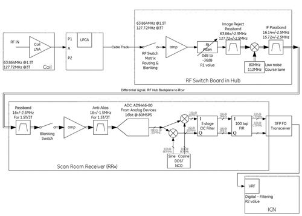
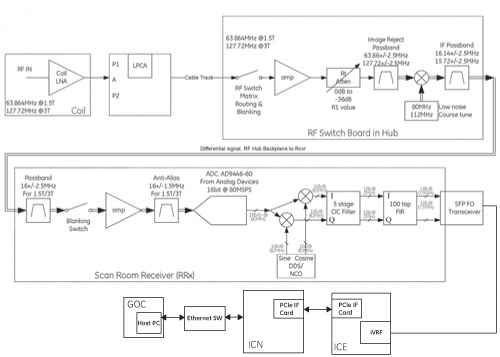
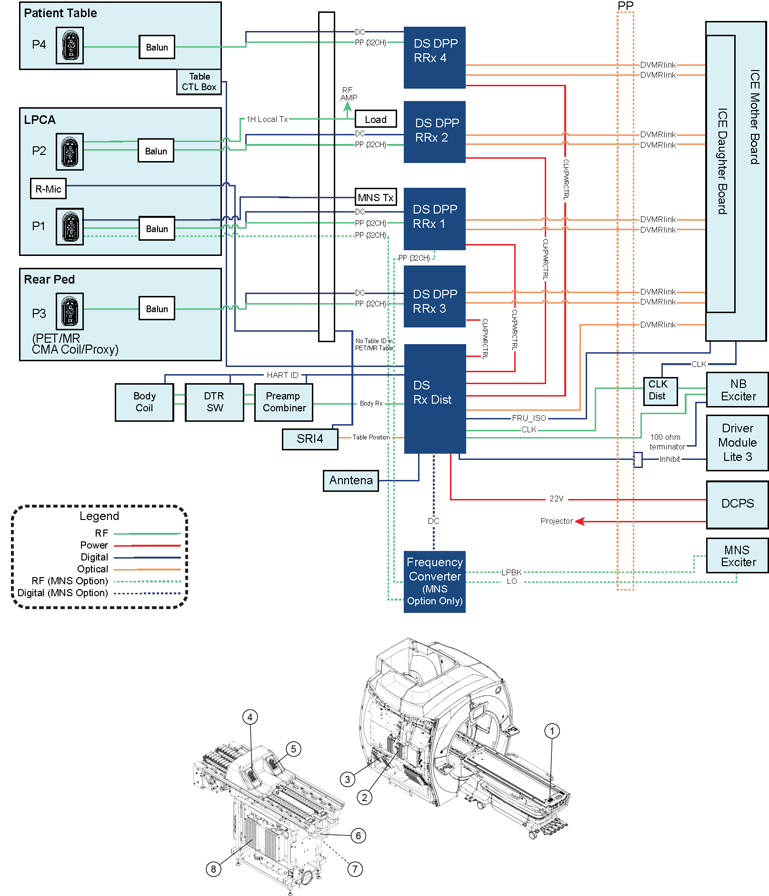
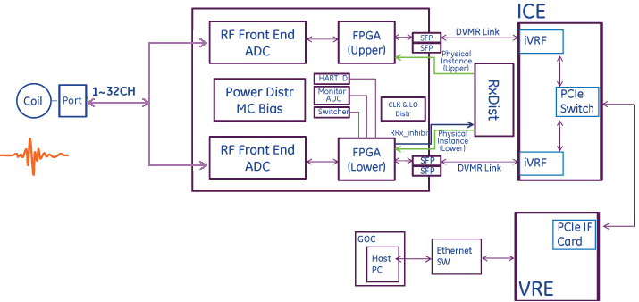
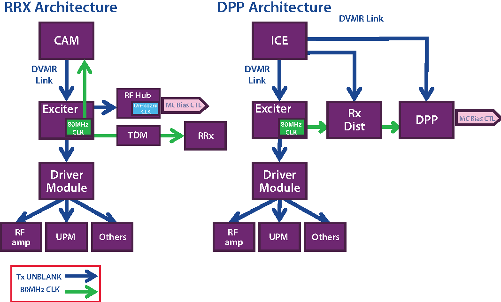
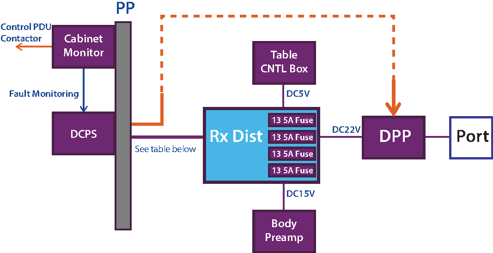
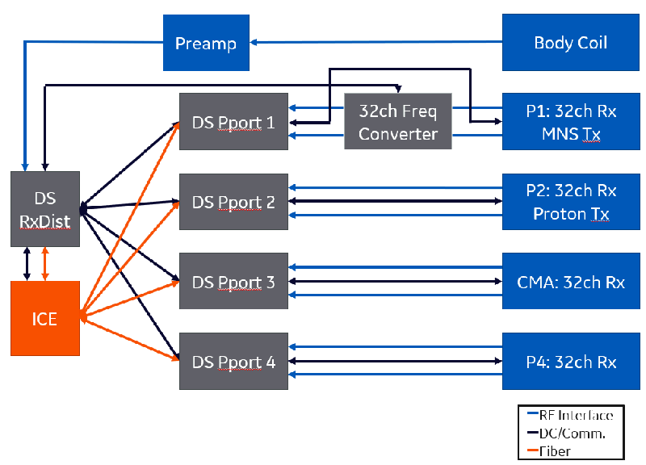

- 00000018WIA30E69F20GYZ
- id_131065593.31
- Sep 26, 2025, 6:24:29 AM
Receive chain theory
Disclaimer
Systems using MP26 software and earlier and systems using software version 30 will use either the RRx receive chain or the DS-DPP receive chain. To determine receive chain type, check the Receiver Type field in the Hardware Configure tab of Guided Install. RRx indicates the RRx receive chain, and DS-DPP indicates the Direct Sample (DS) - Digitized Per Pin (DPP) receive chain.
Overview
The receive chain takes the low-level analog signal from the MR coils and digitizes it for reconstruction to create an image. Coil ports are connected to the receive electronics through cable tracks which carry RF and coil communications. In systems equipped with the RF hub architecture, the RF cables are connected to the RF switchboards which provide gain control. The signal then goes through a mixer module, where the proton frequency is downconverted to an approximately 16 MHz Intermediate Frequency. The signal is then output from the mixer module as a differential signal to the remote receiver (RRx). The RRx and DS-DPP receiver work in a similar manner, digitizing and then decimating and filtering the data. The digital data is sent through an SFP fiber optic transceiver to either the iVRF within the ICE chassis or to the VRF board within the VRE chassis. The iVRF/VRF does more digital filtering, adjusts the R2 gain stage, and hands the data off to VRE. The VRE then reconstructs the data into an image and transfers it via Ethernet to the Global Operator Cabinet (GOC), where it is shown on the operator monitor. For software version 30, Multi-Nuclear Spectroscopy (MNS) is an option.
Safety
| Warning | |
|---|---|
| Notice | |
|---|---|
| Notice | |
|---|---|
Block diagrams
-
Systems with CAM and RRx (16 and 32 channel)
Figure 1. CAM and RRx receive chain (16 and 32 channel) 
-
Systems with ICE and RRx (32 channel)
Figure 2. ICE and RRx receive chain (32 channel) 
-
Systems with ICE and DS-DPP (128 receive through coil ports and 1 channel body receive)
Figure 3. Overall interconnect map 
1 P4 (32 channel) 2 DS-DPP 3 3 DS-DPP 4 4 P1 (32 channel) 5 P2 (32 channel) 6 DS-DPP 2 7 P3 (32 channel) 8 DS-DPP 1 Figure 4. ICE and DS-DPP receive chain (128 receive through coil ports and 1 channel body receive) 
Hardware features
DS-DPP (DPP systems only)
DS-DPP where the analog signal is converted into digital signal, decimated, and filtered.
-
DS-DPP receive chain treats two sets of 16-channel blocks
-
Each 16 channel has independent physical instance assigned by Rx Dist but HART ID is the common
-
Lower 16 channel FPGA is master FPGA for error handling and communication with Rx Dist as follows:
-
Read HART ID, board revision
-
Monitor ADC
-
Switcher frequency setting
-
Send RRx inhibit to Rx Dist
-
ICE module (All DPP systems and RRx systems with ICE)
For ICE module information, see ICE theory.
MC bias board (RRx systems only)
The multi-coil driver board (MCDB) is to provide DC bias for protecting sensitive receive circuitry from high RF power during transmit and to couple RF signals during receive. Receive coils contain decoupling circuitry which require DC bias to control PIN diode circuits in the multi-coil arrays to achieve this functionality.
16-channel systems use one MCDB board. 32-channel systems use two.
Tx UNBLANK and clock distribution
Clock: In DS-DPP architecture, both Rx Dist and DS-DPP RRx P-ports operate by 80 MHz CLK. In RRx architecture, RRx operates by 80 MHz Clock through the RF HUB.

Power distribution for DS-DPP receive chain
Receive single DV22V power from DCPS and Rx Dist distributes the power to receiver of each port module. On-board power is regulated individually.

| Voltage/current | 22V ± 1V |
| Interface | 24W7 connector |
| Monitoring | Cable detect only and no 1-wire communication. Power monitoring is done in cabinet monitor. |
MNS option
The MNS option enables 32-channel MNS Receive on P1 for systems equipped with that option only (systems without the MNS option do not have a frequency converter or an MNS option cable kit).

The RxC modules and connections are shown in RxC modules and connections with MNS option (with the MNS option installed). With the MNS option installed, RF cables from P1 are connected through the 32-channel frequency converter to P-port 1. The coil port interface cable (10V preamp power, Coil ID, Mux control, and so on) bypasses the frequency converter, and connects the P1 port directly to DS P-port 1. When the MNS option is not installed, the 32-channel frequency converter is not present in the system, and the coil port RF and interface cables are connected directly to DS P-port 1.
Inhibit concept
-
Rx Dist and DS-DPP P-ports identify fault conditions (Apex Module, CLK loss, DVlink, and so on) and inhibit RF.
-
DS-DPP P-port FPGA gathers fault condition and sends to Rx Dist, and then, Rx Dist provides Master Inhibit line to Driver Module to indicate fault of Rx Chain.
-
Identify inhibit sources which impact on functional loss (including power fault) and coil protection.
-
All the fault conditions are transferred to ICE through DVMRlink – Recognized by error message on UI.
| Inhibit source | RRx P-port | Rx Dist | Category |
| Apex Module Fault (MC Bias) | x | Coil Protection | |
| Coil Present | x | Coil Protection | |
| Internal Coil Fault (Legacy BTE) | x | Coil Protection (MEMS Driver) | |
| Invalid LUT Index for SOTF | x | Coil Protection | |
| Loss of CLK | x | x | Function Loss |
| Loss of LO | x | Function Loss | |
| Loss of DVMR Link | x | x | Function Loss |
| Loss of Power Good | x | x | Function Loss |
| Loss of SFP Good | x | x | Function Loss |
| Cable detect from inhibit cable | x | Function Loss | |
| Cable detect (others) | x | x | Function Loss |
Related documents
For more information see: